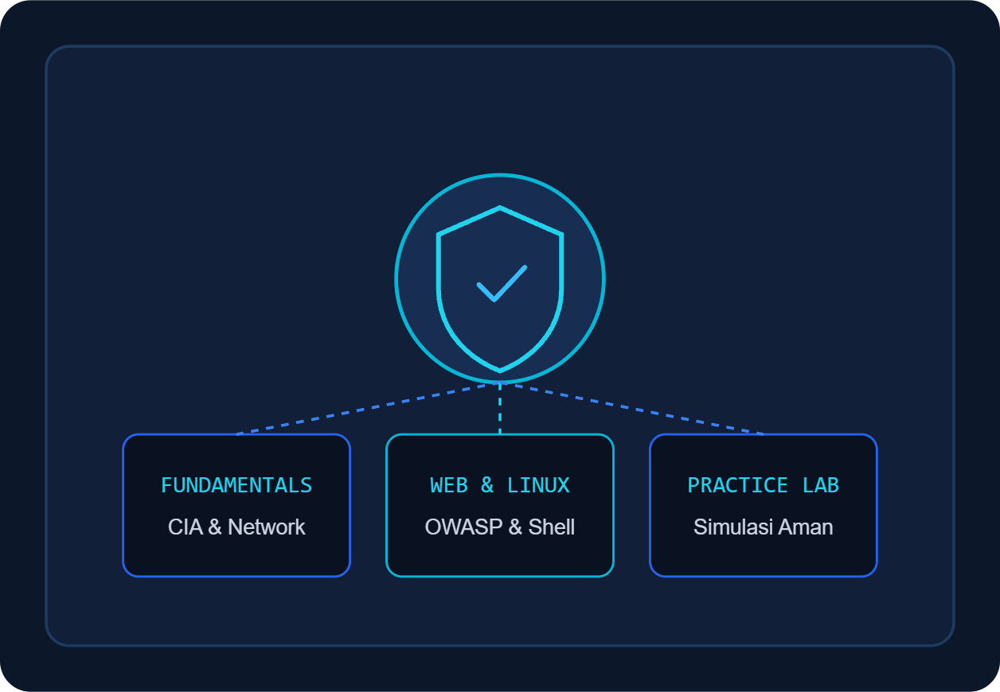

Cyber Security Fundamentals & Network
Pelajari CIA Triad, arsitektur jaringan, protokol komunikasi, serta dasar keamanan sistem operasi Linux.
Rafly Cyber Academy membantu Anda memahami konsep jaringan, kerentanan aplikasi web, kriptografi, dan praktik pertahanan melalui materi terstruktur serta latihan interaktif berbasis browser yang aman.

Pilih fokus kompetensi yang sesuai dengan tujuan belajar Anda, mulai dari pemahaman konsep inti hingga analisis keamanan aplikasi dan forensik digital.
Pelajari CIA Triad, arsitektur jaringan, protokol komunikasi, serta dasar keamanan sistem operasi Linux.
Pahami risiko OWASP Top 10, pola SQL Injection, Cross-Site Scripting (XSS), dan teknik pencegahan di sisi kode.
Kuasai prinsip enkripsi, hashing kriptografis, dan pengelolaan kredensial yang aman dalam aplikasi modern.
Dirancang ringkas dan aplikatif agar mudah dipahami tanpa melompati konsep prasyarat.
Pahami bagaimana paket data berpindah, fungsi port dan firewall, serta dasar pengamanan jaringan lokal.
Kenali kerentanan umum pada aplikasi web dan praktik mitigasi yang terukur pada alur input/output.
Pelajari perbedaan enkripsi dan hashing serta standar keamanan penyimpanan kata sandi.
Fokus pada pemahaman konsep yang kuat serta evaluasi mandiri langsung di browser.
Materi disusun dari terminologi dan prinsip dasar sebelum masuk ke analisis celah keamanan tingkat menengah.
Seluruh latihan kuis dan contoh studi kasus berjalan lokal secara edukatif tanpa menargetkan sistem nyata.
Penjelasan dalam bahasa Indonesia yang lugas dengan istilah teknis standar industri dan rangkuman ringkas.
Lihat contoh pendekatan materi sebelum Anda membuka halaman materi lengkap.
Menggabungkan input pengguna langsung ke string kueri berisiko mengubah struktur perintah SQL. Gunakan parameter terikat (bind parameter) untuk memisahkan data dari perintah.
-- Contoh pendekatan aman menggunakan parameter terikat
SELECT id, username FROM users WHERE username = ?;
Ketika teks dari pengguna ditampilkan kembali ke halaman web tanpa escaping, karakter khusus dapat ditafsirkan sebagai markup atau skrip oleh browser.
// Contoh sanitasi/escaping karakter khusus sebelum tampil
const aman = teksPengguna.replace(/</g, "<").replace(/>/g, ">");
Angka berikut merupakan data ilustratif cakupan modul dalam prototipe edukasi Rafly Cyber Academy (bukan statistik pengguna aktif).